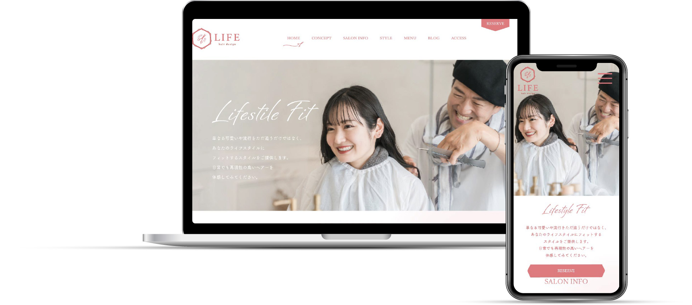
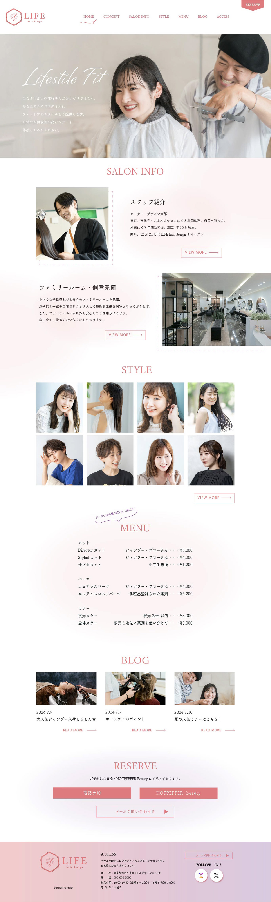
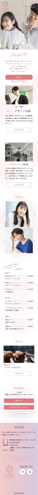

ー作品詳細ー

概要
美容室のコーポレートサイト
想定ターゲット
20~50代女性
担当内容
デザイン、素材選定
制作期間
3週間(ワイヤーフレーム7日、デザイン14日)
使用ツール
illustrator、Photoshop
制作費用
10,000円
目的
認知向上・予約獲得・SNSフォロワーUP
要望
美容室の全体感がわかるサイト、お店の雰囲気・人が感じられるサイト
制作のポイント
【情報設計】
トップページを開いた時の印象でお店全体のイメージが決まると考え、ファーストビューには美容師さんとお客様が笑顔で話している写真を選択しました。 お店側の要望である”お店の全体感・雰囲気・人が感じられる”ような工夫をしつつ、お客様が知りたいであろうコンテンツ(雰囲気→髪型の仕上がり→料金)から順に目に入るよう設計しました。
【お店の全体感・雰囲気・人が感じられる工夫】
スタッフが笑顔で親しみやすいお店であることを表現するために、スタッフが笑顔の写真を選びました。また、コンテンツ背景にはぽわっとぼかして透かせた円を配置することで、暖かく優しい印象を表現しました。
【導線】
予約獲得のために、トップぺ―ジのRESERVEボタンは画面をスクロールしても固定して表示されるように設計しました。(PC版ではグローバルナビの部分に、SP版では画面下部に固定します)
SNSフォロワーUPへの工夫：
MENU部分に”クーポンは各種SNSをCHECK”と吹き出しを付けることで、『SNSを見ないとクーポンが使えない状況』を作りました。(この後SNSに飛んで、フォローした人だけがクーポンを使えるように誘導します)これにより、SNSのフォロワーが伸びていくことを想定しています。
【配色】
コーポレートカラーのピンク色を基調としつつ、パープル系の色も使用しました。ピンクだけの使用も悪くはないのですが、可愛すぎる印象になってしまうため、ターゲット層が若年寄りになってしまう可能性もあると考えました。サロンを訪れる方の中には、知的でクールな印象になりたい方も少なからずいるはずです。そこであえて、サイト全体としてパープルをグラデーションで使用することで、『色の幅が広い＝サロンで実現できる髪型も幅広い』(可愛らしいだけでなく、知的な印象にもなれる)というイメージを表現しました。
【フォント】
ファーストビューの見出しは親しみやすさを感じる手書き文字にしました。 コンテンツタイトルはサロンのロゴにも使用されている明朝体を使用し、全体的な統一感を。 コンテンツテキストには女性向けデザインに多く使用されている筑紫丸ゴシックを採用しました。
トップページを開いた時の印象でお店全体のイメージが決まると考え、ファーストビューには美容師さんとお客様が笑顔で話している写真を選択しました。 お店側の要望である”お店の全体感・雰囲気・人が感じられる”ような工夫をしつつ、お客様が知りたいであろうコンテンツ(雰囲気→髪型の仕上がり→料金)から順に目に入るよう設計しました。
【お店の全体感・雰囲気・人が感じられる工夫】
スタッフが笑顔で親しみやすいお店であることを表現するために、スタッフが笑顔の写真を選びました。また、コンテンツ背景にはぽわっとぼかして透かせた円を配置することで、暖かく優しい印象を表現しました。
【導線】
予約獲得のために、トップぺ―ジのRESERVEボタンは画面をスクロールしても固定して表示されるように設計しました。(PC版ではグローバルナビの部分に、SP版では画面下部に固定します)
SNSフォロワーUPへの工夫：
MENU部分に”クーポンは各種SNSをCHECK”と吹き出しを付けることで、『SNSを見ないとクーポンが使えない状況』を作りました。(この後SNSに飛んで、フォローした人だけがクーポンを使えるように誘導します)これにより、SNSのフォロワーが伸びていくことを想定しています。
【配色】
コーポレートカラーのピンク色を基調としつつ、パープル系の色も使用しました。ピンクだけの使用も悪くはないのですが、可愛すぎる印象になってしまうため、ターゲット層が若年寄りになってしまう可能性もあると考えました。サロンを訪れる方の中には、知的でクールな印象になりたい方も少なからずいるはずです。そこであえて、サイト全体としてパープルをグラデーションで使用することで、『色の幅が広い＝サロンで実現できる髪型も幅広い』(可愛らしいだけでなく、知的な印象にもなれる)というイメージを表現しました。
【フォント】
ファーストビューの見出しは親しみやすさを感じる手書き文字にしました。 コンテンツタイトルはサロンのロゴにも使用されている明朝体を使用し、全体的な統一感を。 コンテンツテキストには女性向けデザインに多く使用されている筑紫丸ゴシックを採用しました。
-完成図-

